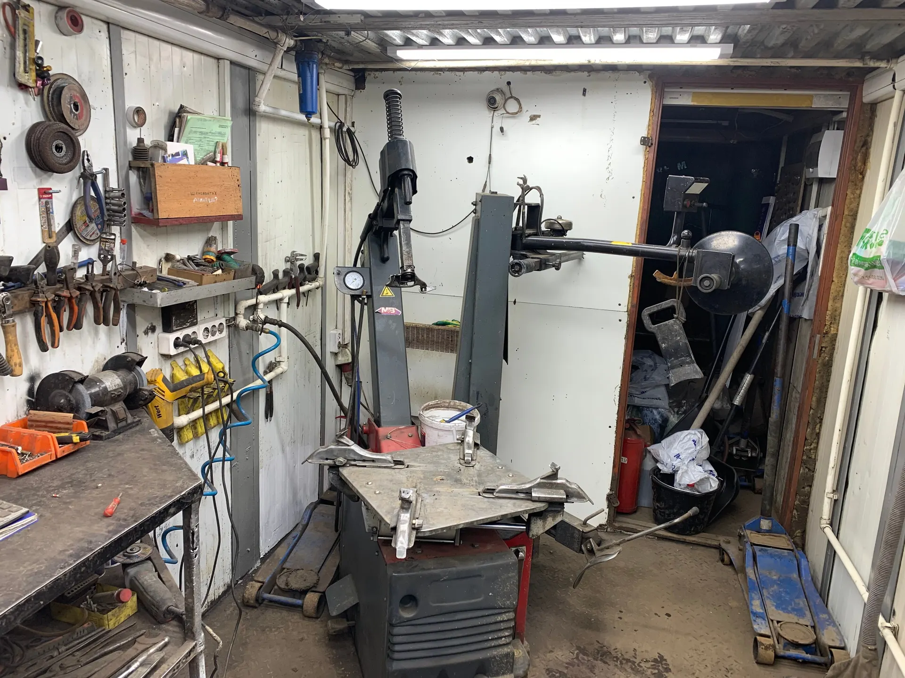
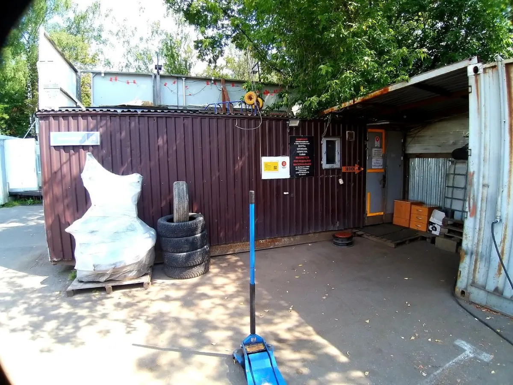
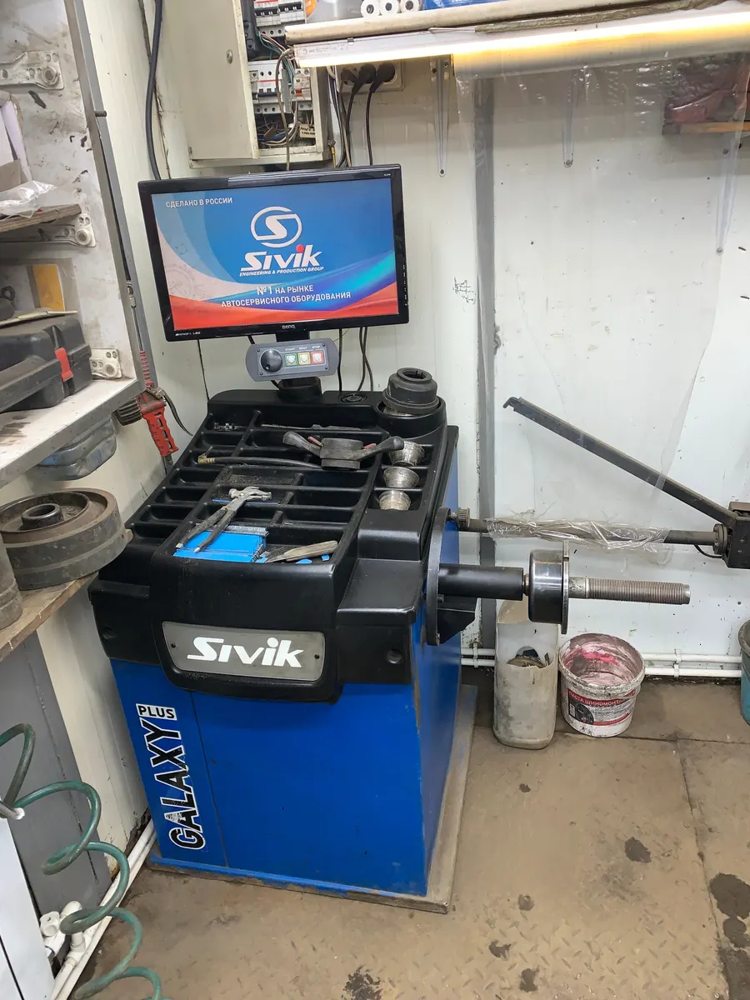
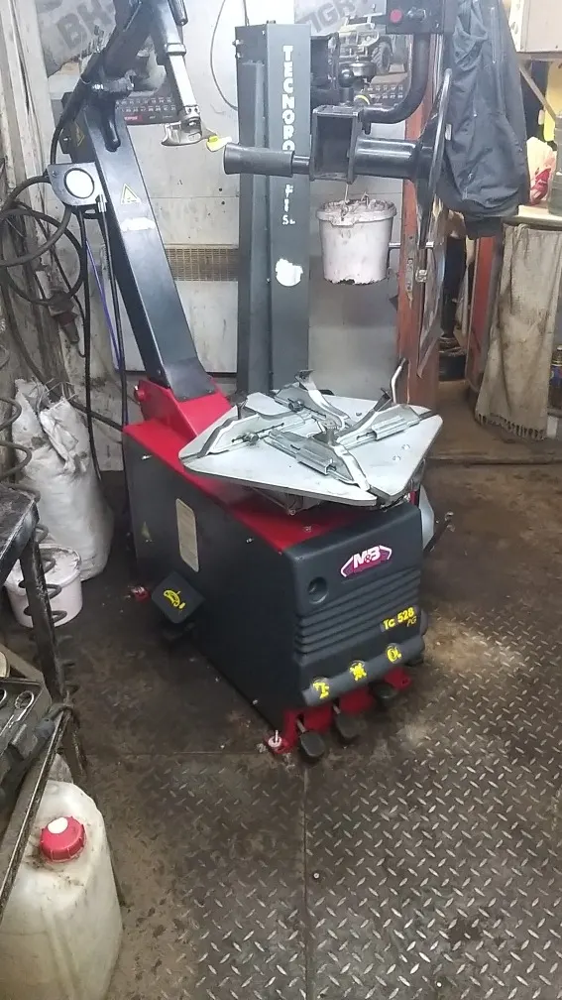

Шиномонтаж · Красногорск
Честный шиномонтаж в Красногорске
Работаем каждый день с 09:00 до 00:00. Меняем и балансируем колёса, ремонтируем проколы и порезы, правим диски.

- Ремонт проколов, порезов и грыж
- Правка и сварка дисков
- Сезонное хранение шин
Цены на основные услуги
Цена зависит от автомобиля и радиуса колеса, мастер подскажет точную сумму.
Шиномонтаж и балансировка
- Комплекс R12–R22точная цена по радиусу нижеот 2 000 ₽ за 4 колеса
- Балансировка колёс1 600 ₽ за 4 колеса
- Подкачка колёсэлектронным манометром25 ₽ за колесо
Комплекс по замене шин, легковые
- R142 600 ₽ за 4 колеса
- R152 800 ₽ за 4 колеса
- R163 200 ₽ за 4 колеса
- R173 600 ₽ за 4 колеса
- R184 000 ₽ за 4 колеса
- R194 400 ₽ за 4 колеса
- R205 000 ₽ за 4 колеса
- R216 000 ₽ за 4 колеса
- R227 000 ₽ за 4 колеса
- R238 000 ₽ за 4 колеса
Комплекс по замене шин, кроссоверы и минивэны
- R143 000 ₽ за 4 колеса
- R153 200 ₽ за 4 колеса
- R163 600 ₽ за 4 колеса
- R174 000 ₽ за 4 колеса
- R184 400 ₽ за 4 колеса
- R194 600 ₽ за 4 колеса
- R205 200 ₽ за 4 колеса
- R216 000 ₽ за 4 колеса
- R227 000 ₽ за 4 колеса
- R2310 000 ₽ за 4 колеса
Ремонт шин
- Прокол жгутомсо снятием колеса400 ₽ за колесо
- Ремонт прокола, пореза, грыжи850 ₽ за колесо
- Холодная вулканизация900 ₽ за колесо
- Ремонт боковых порезов1 100 ₽ за колесо
- Горячая вулканизация2 000 ₽ за колесо
- Герметизация борта колеса200 ₽ за колесо
Диски и другое
- Правка дисковстальные 1000 за шт., алюминиевые от 1000 до 5000 за одно повреждениеот 1 000 ₽ за колесо
- Правка стальных дисков1 200 ₽ за колесо
- Сварка диска аргоном200 ₽ за 1 см
- Съём секретных болтов и гаек1 000 ₽ за колесо
- Заправка автокондиционерас поиском утечек3 000 ₽ за 600 г
- Сезонное хранение шин4 500 ₽ за 4 колеса
Цены с карточки на Яндекс.Картах и с прайс-листа в боксе. Актуальную сумму уточняйте у мастера.
Как проходит
- 01
Позвонили или написали в WhatsApp
Можно приехать сразу: по отзывам клиентов, принимают и без предварительной записи.
- 02
Мастер находит причину
Показывает, что нашёл, и объясняет, что действительно нужно.
- 03
Делаем работу
Клиенты пишут, что на комплект уходит 15–20 минут.
- 04
Проверяем давление и отдаём машину
Как пишут в отзывах, колёса дополнительно проверяют по давлению.



За что хвалят
Не навязывают лишние услуги
Из отзывов: если проблему можно решить бюджетно, делают именно так.
Объясняют и показывают
Мастера рассказывают, что нашли, и подсказывают, как обслуживать колёса.
Принимают поздно вечером
Клиенты приезжали и в 22:00, и около 23:00: работают до полуночи.
Берутся за сложный ремонт
Порезы, грыжи, правка и сварка дисков, секретки.
Отзывы с Яндекс.Карт
«Спустило колесо, позвонили в шиномонтаж, нас приняли без предварительной записи. Быстро выявили и устранили проблему. Всё отлично! За 10 минут всё сделали👍»
Нина Селезнева · 23 июля 2025
«Отлично работают! Быстро,качественно и аккуратно. Поменяли резину по сезону, всё сделали за 20 минут. Цены адекватные. Спасибо, буду рекомендовать!»
Артур Мартынов · 15 ноября 2025
«Мне кажется, что это самый лучший шиномонтаж не то, что в Красногорске, во всей Москве. Доп.услуги не навязывают. Если проблему можно решить бюджетно, делают именно так. Полное доверие и абсолютная рекомендация.»
Ch E · 6 ноября 2023
Отзывы с карточки на Яндекс.Картах, без правок.
Контакты
- Адрес
- Октябрьская улица, 13, Красногорск
- Часы
- Каждый день 09:00–00:00